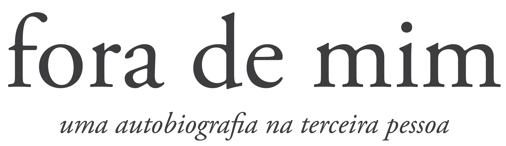

<!DOCTYPE html>
<html>

<head>
    <meta charset="utf-8">
    <meta name="viewport" content="width=device-width, initial-scale=1">
    <title>fora de mim</title>
    <link rel="stylesheet" href="expansoes.css">
    <link rel="icon" type="image/png" href="icon-24.png">
    <link href="https://fonts.googleapis.com/css2?family=EB+Garamond&display=swap" rel="stylesheet">

</head>

<body>
    <div class="setinha">
        <a href="index.html">
        
        </a>
    </div>


    <div class="section">


        <h1 style="margin-top: 8%; margin-left: 55%;">sabes quem sou?</h1>
        <p> <i>sabes quem sou?</i> é um momento projectual no qual partimos da ficção principal
            para três diferentes expansões ao tema nela abordado:a identidade enquanto
            <i>MacGuffin</i> e a identidade fantasma.Quantos eu's poderão habitar um só corpo?
            <br>
            <br>
            A nossa ficção procura compreender o limite do eu e da sua construção:
            existirá o eu, ou seremos constantes construções do outro e dos contextos
            em que esse outro exterior a nós se insere? Através destes registos audiovisuais
            realizados individualmente, exploramosas diferentes problemáticas que giram
            em torno da problemática principal, de entre elas: o eu enquanto construção
            com diferentes níveis de representação, a não-identificação do eu com as
            experiênciase memórias do corpo (separação entre pensamento e matéria),
            e a desassociação entre o eu e a imagem do corpo que habita.
        </p>


        <video controls style=" margin-left:16%; width: 68%; margin-top: 10%; margin-bottom: 5%; display: block;">
            <source src="sabesquemsouum.mp4" type="video/mp4"></video>


        <p><span id="dots1"></span><span id="more1">À questão “sabes quem sou?” este objeto audiovisual responde com a
                ânsia de quem não tem respostas, de quem as procuras incessantemente
                mas acaba mergulhado em sombras, em vultos, em memórias de algo que
                não se sabe ter sequer sido, de ilusões.
                <br>
                <br>
                A possibilidade de num único corpo habitarem vários eu’s, de podermos
                sair de nós mesmos e olhar- mo-nos, como um outro olha um par, leva à
                pergunta que não quer calar: quem sou eu?
                <br>
                <br>
                Este objeto serve de expansão à ficção criada coletivamente em <i>fora de mim</i>,
                onde a questão da identidade e do conflito de eu’s é o foco. Nele são exploradas
                as memórias visual e auditiva que aludem a momentos passados em busca de definição,
                certezas de terem existido e nitidez de representação. O sujeito depara-se com 
                estas imagens mas não se revê, tornando-se cada vez mais agitado e persiste,
                dirigindo-se a que vê nestas imagens e sons: “sabes quem sou?”.
                <br><br>
                <br><br>

            </span>
        </p>
        <button onclick="myFunction1()" id="myBtn1" style="margin-left: 50%;">+</button>


        <video controls style=" margin-left:16%; width: 68%; margin-top: 10%; margin-bottom: 5%; display: block;">
            <source src="sabesquemsoudois.mp4" type="video/mp4"></video>

        <p><span id="dots2"></span><span id="more2">Como conhecemos verdadeiramente alguém? O que nos garante que aquilo
                que assumimos<br>
                como real é de facto, real? <br>
                <br>

                Na República, Platão defende a existência de 3 níveis de representação que podem 
                ser aplicados às questões identitárias sobre as quais este objecto se debruça
                à sua perceção: o real; o contexto, que advém de uma relação direta entre o real 
                e o meio; e a percepção por parte do outro, que é de carácter subjetivo e advém
                de juízos de valor retirados do plano anterior.
                <br>
                <br>
                Quantas camadas possui deste modo um “eu”? A identidade do outro presume a existência 
                de inúmeras camadas de conhecimento.
                <br>
                <br>
                Quanto mais as descortinamos mais perto estamos da verdadeira identidade. Estas várias
                camadas são importantes na construção da identidade e coexistem.
                <br>
                <br>
                É acerca da quantidade de camadas existentes entre aquilo que vemos no outro e o seu
                verdadeiro eu, ou seja, tudo aquilo que está entre, que este objecto de desenvolve.
                <br>
                <br>
                Neste objecto audiovisual, expõe-se deste modo uma visão pessoal acerca da ficção 
                em construção, <i> fora de mim</i>, onde tal como na ficção em questão existe um 
                corpo com múltiplas camadas que não sabe quem é e que tenta incessantemente através 
                deste deste descascar de camadas encontrar uma resposta.
                <br><br>
                <br><br>


            </span>
        </p>
        <button onclick="myFunction2()" id="myBtn2" style="margin-left: 50%;">+</button>


        <video controls style="margin-left:16%; width: 68%; margin-top: 10%; margin-bottom: 5%; display: block;">
            <source src="sabesquemsoutres.mp4" type="video/mp4"></video>


        <p><span id="dots3"></span><span id="more3">Sabes quem sou? Eu não sei. é um objeto audiovisual que se
                desenvolve no <br>
                âmbito da disciplina de Design de Comunicação 2019/2020 inserindo-se no projeto
                <i>A Collision between a stream of light and an obstacle</i>. Enquanto Gabinete
                de Ficção, visa expor perspectivas e variantes pessoais acerca do projeto
                a ser desenvolvido.
                <br>
                <br>
                Tal como na ficção <i>fora de mim</i> há uma presença evidente de uma identidade
                fantasma. Uma identidade que se perdeu e que outrora se definia facilmente.
                <br>
                <br>
                A quem pertence agora o caminho que percorrem aqueles pés?
                <br>
                <br>
                <i>Sabes quem sou? Eu não sei.</i> é uma conversa interior, é a procura de uma
                essência. Ao amplo céu, questionamos a nossa existência. Deambulamos sobre aqueles 
                que vemos. Procuramos um reflexo nosso. Mas o espaço está vazio. A nossa identidade
                já não é resgatável. Só nos resta seguir. Só nos resta recordar.
                <br><br>
                <br><br>


            </span>
        </p>
        <button onclick="myFunction3()" id="myBtn3" style="margin-left: 50%;">+</button>


    </div>


    <svg height="1" width="100%" style="margin-top:10%">
        <line x1="6%" y1="0" x2="94%" y2="0" style="stroke:#3d3d3f18; stroke-width:5; margin-left:auto; margin-right:auto;" />
      </svg>
    <footer class="site-footer">
        
        <p style="color: #3d3d3f; text-align: left; font-family: 'EB Garamond', serif; font-size: 13px; margin-left: 6%; line-height: 1.2; margin-top: auto; margin-bottom: auto;">Design de Comunicação VI <br><br> Design de Comunicação <br> FBAUL 2019/2020</p>
        
        <a style="margin-right: 6%; margin-top: auto; margin-bottom: auto; color: #3d3d3f; text-decoration: none; font-family: 'EB Garamond', serif; font-size: 14px;" href="https://www.instagram.com/_forademim_/"> _forademim_</a>
       </footer>


</body>

<script>
    function myFunction1() {
        var dots = document.getElementById("dots1");
        var moreText = document.getElementById("more1");
        var btnText = document.getElementById("myBtn1");

        if (dots.style.display === "none") {
            dots.style.display = "inline";
            btnText.innerHTML = "+";
            moreText.style.display = "none";
        } else {
            dots.style.display = "none";
            btnText.innerHTML = "-";
            moreText.style.display = "inline";
        }
    }


    function myFunction2() {
        var dots = document.getElementById("dots2");
        var moreText = document.getElementById("more2");
        var btnText = document.getElementById("myBtn2");

        if (dots.style.display === "none") {
            dots.style.display = "inline";
            btnText.innerHTML = "+";
            moreText.style.display = "none";
        } else {
            dots.style.display = "none";
            btnText.innerHTML = "-";
            moreText.style.display = "inline";
        }
    }


    function myFunction3() {
        var dots = document.getElementById("dots3");
        var moreText = document.getElementById("more3");
        var btnText = document.getElementById("myBtn3");

        if (dots.style.display === "none") {
            dots.style.display = "inline";
            btnText.innerHTML = "+";
            moreText.style.display = "none";
        } else {
            dots.style.display = "none";
            btnText.innerHTML = "-";
            moreText.style.display = "inline";
        }
    }
</script>


</html>